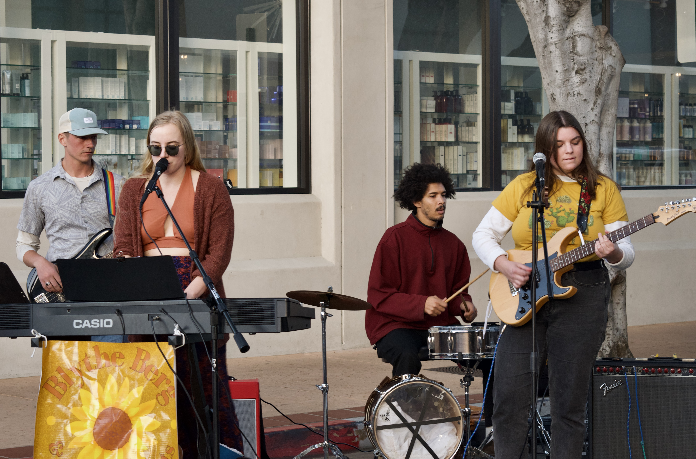
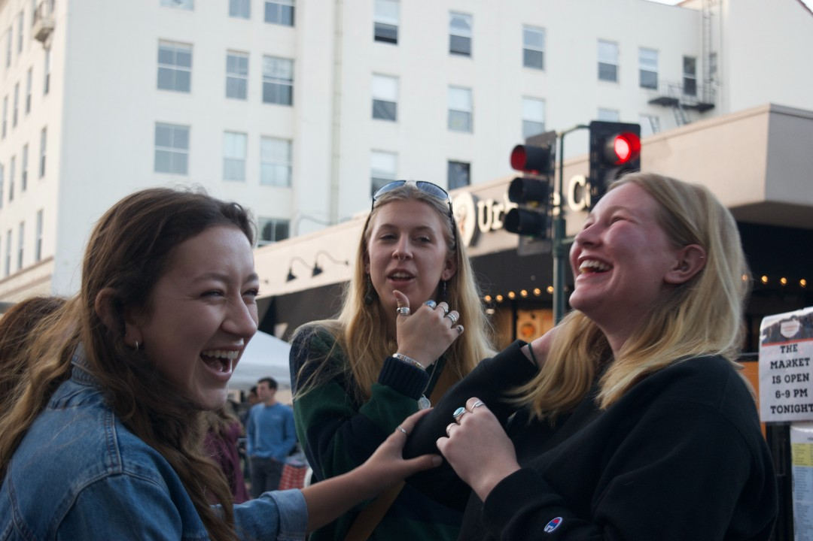
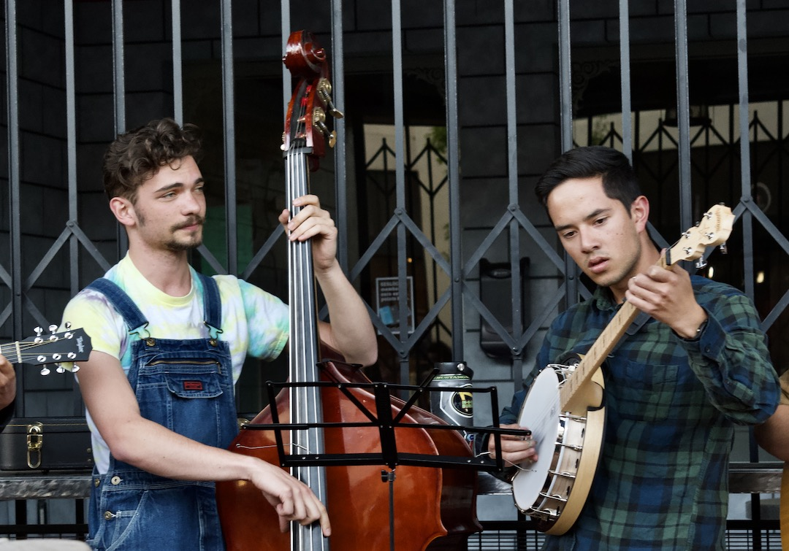
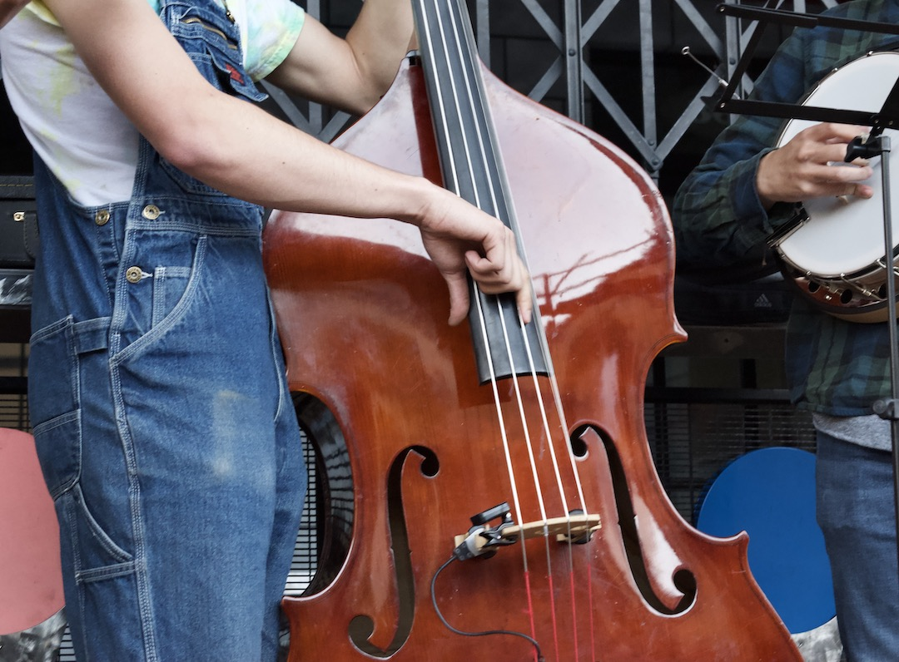
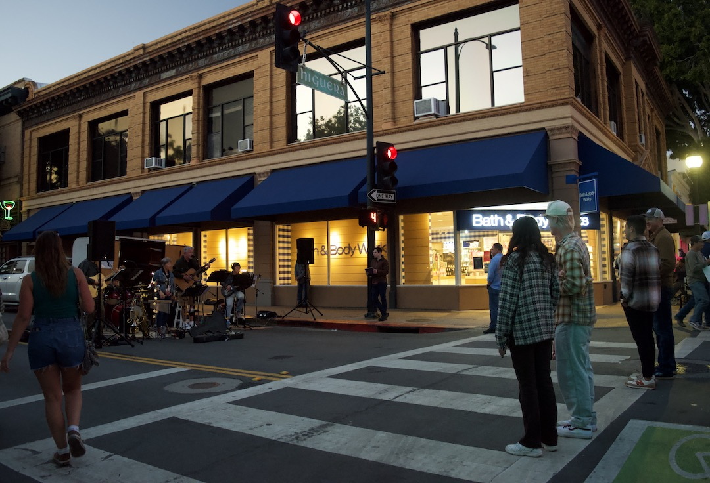
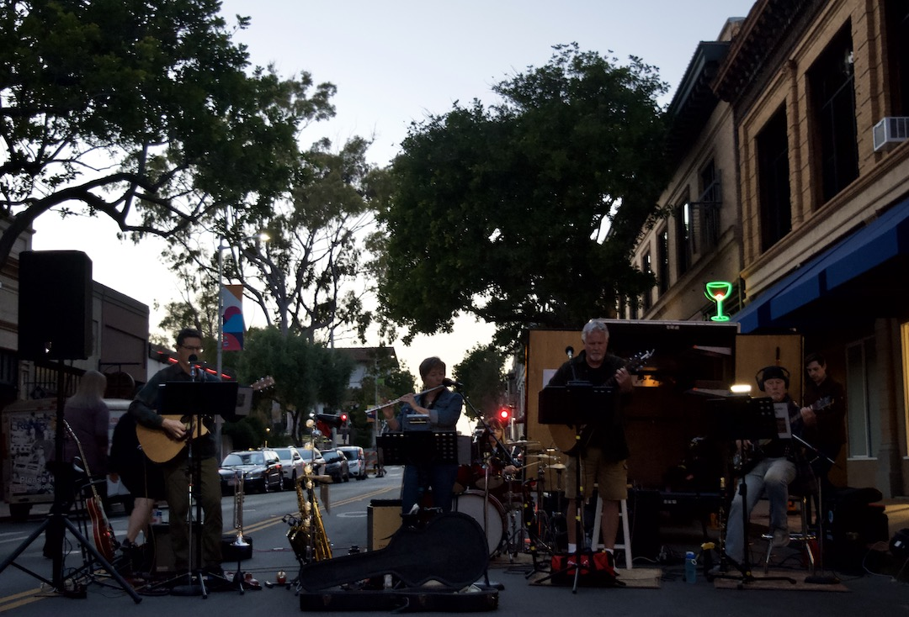
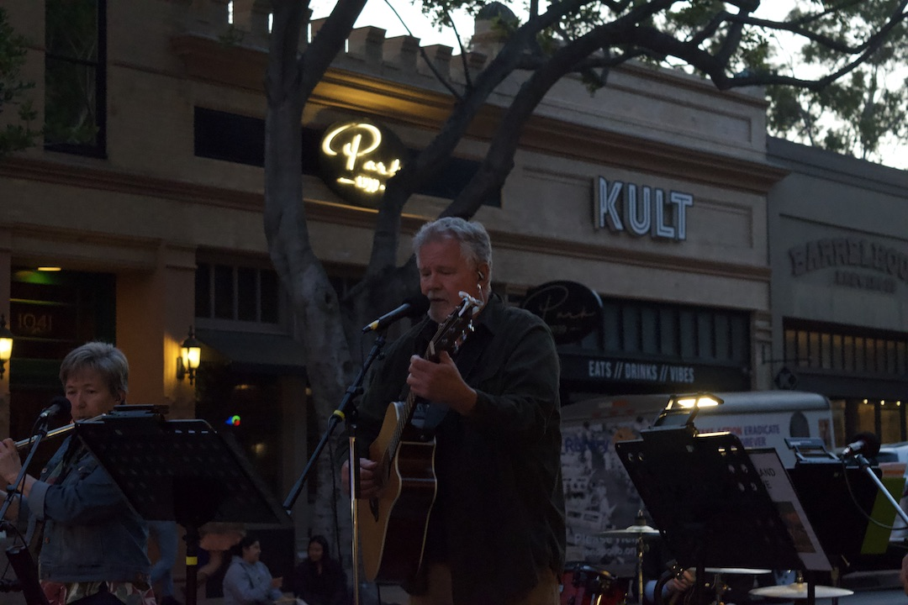
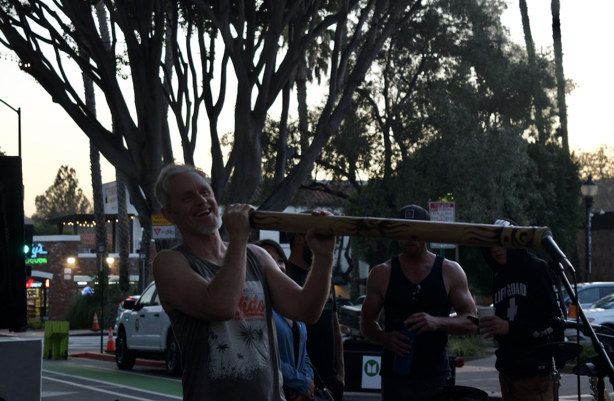
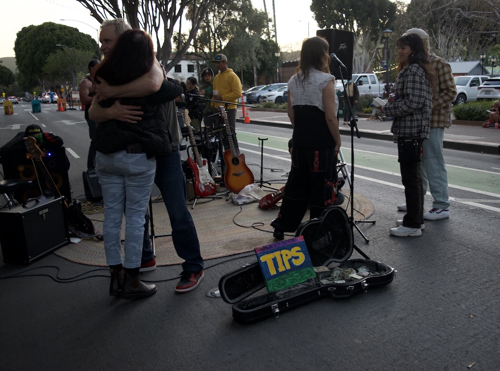
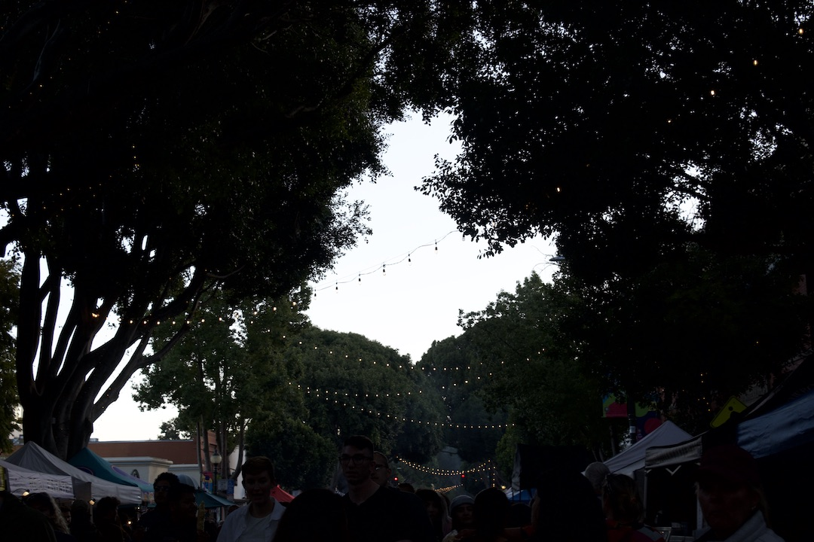

The people and bands that give San Luis Obispo's Farmers Market its good vibrations.

April 20, 2023 - Bltyhe Berge & thebodyparts perform at the Farmers’ Market in Downtown San Luis Obispo on Thursday night. The band, which regularly plays at the Farmers’ Market, is made up of five Paso Robles locals that have been awarded two SLO New Times Music Awards for its original songs. Listeners at the corner of Higuera and Morro Street, dance while the band plays its original song, “Noodles.”"/>

Makenzie Wallace, philosophy sophomore, and Elizabeth Margrave, political science sophomore, laugh to one another while listening to Blythe Berg & thebodyparts. The friends enjoy attending the Farmers’ Market for good food and live music. “The bands that play each week are all unique in their own ways, but they all add to the atmosphere of the Farmers’ Market. I love hearing the new voices and songs I haven’t heard before,” Wallace says."/>

Andrew Osborn, left, and Bryce Yuen, right, play the cello and banjo. The band has no decided name. “We are just some goobers who play music together,” Yuen says. The classical, folk mixed songs the band plays draw a small crowd as people stop to listen while shopping at the nearby produce stands."/>

Osborn’s band is the only one playing on April 20 at the Farmers’ Market playing with a cello or a banjo. The cello is known to be one of the most difficult instruments to master. The unique sound adds a lighthearted feeling to the atmosphere of downtown."/>

A small crowd grows on the corner of Higuera and Chorro Street to listen to a band. Lily Cook, a statistics third year, left, walks to her car after listening to the band for a bit. Cook sat down with corn she bought from a stand at the marker, to listen to the band before heading out."/>

From left to right, Tim Myer, Janice Goodwin, Cal Wood, and John Olsen, perform as part of their band, Woodland Drive. The band plays a little bit of everything, from gospel and country to rock and oldies."/>

Woodland Drive’s lead singer, Cal Wood, performs the band's last song of the set. His voice is low and calming. As the band finishes, the crowd applauds and disperses into a busy Higuera Street."/>

Steve Deneen, of Captain Axe, laughs after an unsuccessful attempt at playing the didgeridoo. People listening attempt to play the instrument when he welcomes them to. “Do you want to give it a go?” he asks me as I laugh and shake my head back."/>

Steve Deneen and Lacey Hazzen of Captain Axe, exchange a long hug before their performance begins. The Surf Punk Garage Band laughs and chit chats with anticipation as they go over their set list."/>

The sounds of music and chatter take over downtown. As the sun sets, guests of the Farmers’ market start to make their ways back to their cars."/>